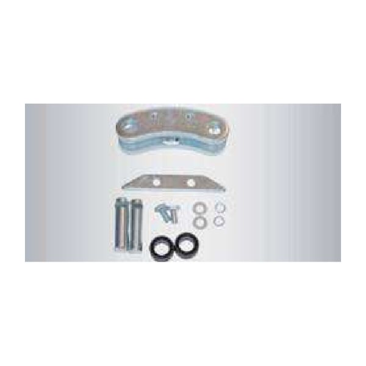
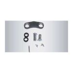
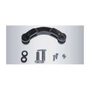
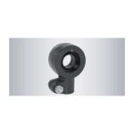
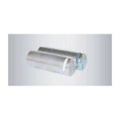
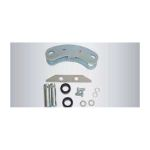
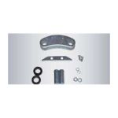
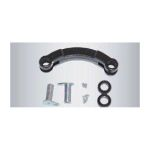
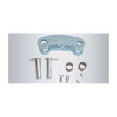

Parts › Pins, Axles & Linkage › A21B4-32081

Available
Email for a quote
A21B4-32081 Connecting Rod Repair Kit
| OEM part number | A21B4-32081 |
| Category | Pins, Axles & Linkage |
| Type | Aftermarket replacement |
Send us the quantity you need and we'll reply with pricing, usually within 24 hours. Not the exact part? We can source it. Send the part number or a photo.
More Pins, Axles & Linkage

01D4-12311Connecting Rod Repair Kit
15-210001Connecting Rod Repair Kit
2025N4.3-400001Tilt Cylinder Clevis Assembly
25788-521014kTilt Cylinder Pin
3013451Connecting Rod Repair Kit
30CJA31-00010Connecting Rod Repair Kit
30DH-210002AConnecting Rod Repair Kit
32410Connecting Rod Repair Kit